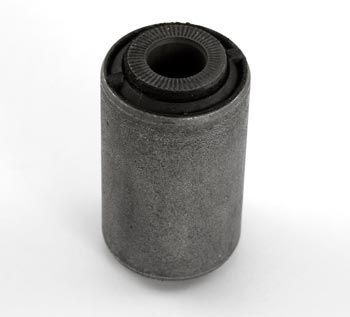

-
Ok, so we royally screwed up. Went spent all weekend fighting to remove the bushings. A torch wouldn't burn them and we couldn't press them out. Finally built a fire and set them in it, voila, they came out. Not thinking and just being happy we could finally clean them up and install new bushings we cut the outer sleeves out of the control arms…not my smartest decision. Logic was that if the crossmember bushings are designed to not use the outer sleeves the whole kit must be the same. Don't know who's idea it was to re-use them instead of designing larger bushings.
Also, in the process of taking it out we are now missing a bolt sleeve. Now my dilemma. Is there ANY kit designed to not use the outer sleeve and comes with new bolt sleeves? Is the 280zx rear control arm that different from the 300zx that the bushing kit for the 280zx wouldn't work?
Found these a the Z store, http://www.thezstore.com/page/TZS/PR…c20n03/23-4314, is that an oem replacement? it would at least get me the bolt sleeves but is that also the outer sleeve on it? Really needing some help with this as my car was supposed to be done this weekend. Haven't had it in two months and it's my daily. Now it's going to be 2 weeks before I can get it back IF we can figure out what to do.私♥フェアレディ・ゼット
・1984 300zx N/A -
The prothane bushing kit needs the inner sleeves not the outer sleeves… ?
I'll be producing some replacement inner sleeves in stainless shortly, likely not soon enough for you though :\ -
I didn't think it needed the outer sleeves either but when I looked up some tutorials they mentioned having to re-use the outer sleeves. We found out we needed them though, the bushings alone are way to small to fit in the control arms. Found one of the sleeves we cut out and I tried to fit the bushing into the sleeve just to see if that was the case or maybe is was an issue of mis-packed bushings. It seems they would fit perfect if the outer sleeves were still there. I'm still hoping we find the inner sleeve, we have 3 of the 4.
That's why I was hoping the bushing from the z store would work, I'm not afraid to spend that kind of money if it will give me both sleeves, since I'm sort of up against a wall on this. It is sort of a time sensitive issue that's why I need to figure this out and order parts asap. The family members are having to move really soon so I need everything out of the shop as fast as possible. This build has taken nearly a month longer than it was supposed to because everything that could go wrong did go wrong and then some.私♥フェアレディ・ゼット
・1984 300zx N/A -

1988 300ZX Turbo, Shiro Special #760
1988 300ZX Turbo Automatic (wife's car)
1991 Hard-body 2WD
http://zccw.org/zccw/?page_id=1215 -
Thanks alot reddzx. I'm assuming I would need 2 of #55044 and #55045. There are 4 inner sleeves but 2 of them are different right?私♥フェアレディ・ゼット
・1984 300zx N/A -
The toe bolt versions are knurled… which seems to be to stop them from turning, but I can't understand what that would matter when the eccentric washer holds the bolt.
I would suggest it doesn't matter which ones you get, the outer ones have a larger ID and no knurled ends. -
I'm not sure of the difference.
1988 300ZX Turbo, Shiro Special #760
1988 300ZX Turbo Automatic (wife's car)
1991 Hard-body 2WD
http://zccw.org/zccw/?page_id=1215 -
I just went ahead and placed an order and got 2 of each like it calls for. Thanks for the help guys, I was really starting to stress not getting everything back together on time.私♥フェアレディ・ゼット
・1984 300zx N/A -
Interesting, I too thought that polyurethane rear control arm bushings did not require the outer sleeves just like the rear sub-frame bushings don't need them. Can you post pictures of the "outer sleeves" you ordered/need? I'm super curious to see what they look like. I didn't think you can insert new sleeves. -
The photo Nissan has looks identical to the photo the z store uses. There's a link in one of my earlier posts. I'm only assuming that what I ordered includes outer sleeves because you have bolt sleeve, then rubber and then a metal cylinder encasing it.私♥フェアレディ・ゼット
・1984 300zx N/A -
The inner sleeves are what's needed to install poly bushings. I believe some people order up some new bushings because the original inner sleeves get destroyed in the removal. I have not removed my own stock bushings but I did just get a car with poly rear and I removed them to swap onto other arms. Once you have just the bolt sleeves (inners) from stock bushings your set. I would suggest using the knurled one for the inside just like they came out as the two sleeves differ ever so slightly in OD. When redz31.net is referring to inner and outer sleeves they are referring to the inner as the knurled bolt sleeve and the outer the non knurled bolt sleeve not two sleeves per hole, but two bolt sleeves per side. -
Gotcha, I don't think I explained myself very well then. On the control arms you have the really thin metal sleeve that sits between the bushings and the control arm(what I was calling the outer sleeve), we cut that out. Just like we did for the rear subframe. Now when we put the poly bushings in the control arms they have almost a quarter inch of play. I put the bushings up to the outer sleeve that we cut out and it appears had we not cut them out it would have worked. How is it that mine are to small yet everyone else thought you had to cut them out? Possible ASCO sent me the wrong parts?私♥フェアレディ・ゼット
・1984 300zx N/A -
Dude that's weird. I did my control arm bushings in the same garage, and I didn't have to cut anything out of the control arms, we just slid the bushings in and it fit. The bushings also are slightly different sizes for inner and outter on the control arm, just like the inner sleeves are, but I never had no 1/4 inch of play. I never even knew there was an outter sleeve that was in there (If it's there on mine at all) because I really didn't notice anything that looked like an outter sleeve.
Get Tim to send you a pic if you're not in the shop right now, of the bushings in the control arms. Perhaps we can get a better grasp from over the internet that way.
Edit: (This is PrideZ31 btw guys. Can't figure out which e-mail my PrideZ31 name is linked to.)
Edit#2: Now that memory serves… Yeah There was an outter sleeve. Tim should've known to leave it in there because we never cut them out of mine. Always test fit before damaging something that might be needed. =P -
Hey man, we cut them out because he said he remembered all your sleeves getting cut out. Here's a picture of what I ordered from Nissan…

Like I said it appears to have the outer sleeve with it. I'm really hoping I'm not going to have to hunt down new control arms because of this.私♥フェアレディ・ゼット
・1984 300zx N/A -
We just cut the sleeves out of the rear subframe. All the other bushings, I just took things apart as much as I could while he would be at work, and he'd come home and help throw 'em in. So I threw my control arms in the fire like yours to get the old ones out, then painted 'em up all nice and fresh. Then he got off work, and we put the bushings in and the control arms back in the car. No cutting of sleeves.
Hope it does have the sleeve. But if you end up needing a set of control arms, lemme holla at whatever two you have left over. I get the feeling both mine are bent.

Copyright © 2006–. All rights reserved. Privacy Policy